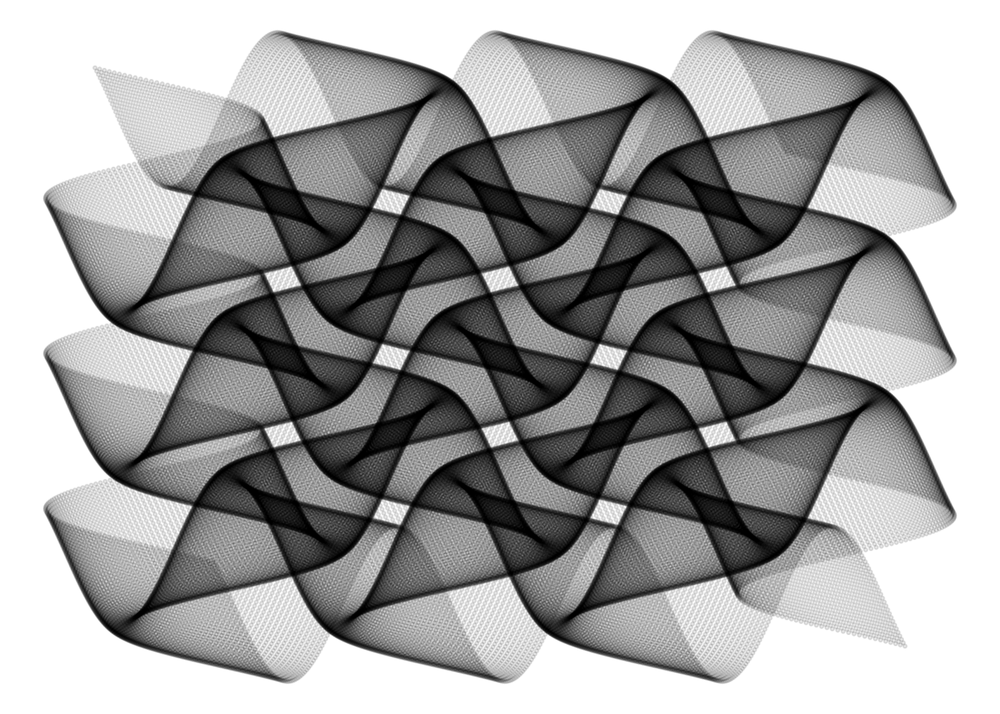

Sometimes something simple can turn out to generate the most beautiful things. Following you will find a few lines of code that present a beautiful pattern.
Oval Curve
n <- 300
t1 <- 1:n
t0 <- seq(3,2*n+1,2) %% n
t2 <- t0 + (t0 == 0)*n
df <- data.frame(x = cos((t1-1)*2*pi/n),
y = sin((t1-1)*2*pi/n),
x2 = cos((t2-1)*2*pi/n),
y2 = sin((t2-1)*2*pi/n))
ggplot(df,aes(x,y,xend = x2,yend = y2)) +
geom_segment(alpha = .1) +
theme_void()
Wavy Weaving of Wonder
seq(from=-10, to=10, by = 0.05) %>%
expand.grid(x=., y=.) %>%
ggplot(aes(x=(x+pi*sin(y)), y=(y+pi*sin(x)))) +
geom_point(alpha=.1, shape=20, size=1, color="black")+
theme_void()